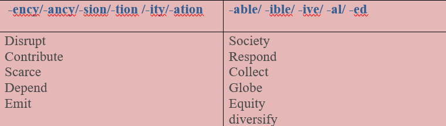

The world is facing a reckoning when it comes to energy supply. Despite decades of calls to reduce dependency on fossil fuels, countries have persisted on the widespread use of coal, oil and gas to fuel their economies. Not only has the burning of fossil fuels been responsible for rising carbon emissions that drive global heating, but we have created a globalized world in which food and energy systems are highly concentrated – which makes them extremelyvulnerable to disruption.
As the prices for energy, fertilizer and food commodities skyrocket, people across the planet are unable to absorb the rising costs. As a result, we see an unprecedented contribution of rising energy prices to food insecurity and humanitarian needs. Our collective failure to promote diversified energy systems has forced millions around the world to become dependent on humanitarian assistance to meet their basic needs for survival.
Even before the current energy crisis began, the world was falling short in ensuring equitable access to energy for all. 770 million people lack access to electricity worldwide, which precludes efforts to achieve poverty eradication and other development goals. At the same time, approximately 2.5 billion people lack access to clean cooking, meaning nearly one-third of the global population still depend on firewood and charcoal for cooking their meals (IEA, 2021). This leads to negative health consequences, disproportionately threatening the safety and well-being of women and girls. It also contributes to deforestation and resource scarcity, which can trigger social tensions.
Task1Vocabulary
Choose the correct option for the given words.
Task 2 Word formation
Form new words using the given noun and adjective suffixes
E.g: Insecure - insecurity
Noun suffixes Adjective suffixes

Task3
There are some extracts from the text given above. Read the extracts and translate them into Uzbek.
üîπ ...reduce dependency on fossil fuels
üîπ ‚Ķrise carbon emissions
üîπ ‚Ķabsorb the rising costs
üîπ ‚Ķbecome dependent on humanitarian assistance
üîπ ‚Ķmeet basic needs for survival
üîπ ‚Ķachieve poverty eradication
üîπ ‚Ķlead to negative consequences
üîπ ‚Ķtrigger social tensions
Task4 Listening
Listen and write phrases with a/an or a number and a word in the box.

1. Three phones
2. ____________________
3. ____________________
4. ____________________
5. ____________________
6. ____________________
Task5 Writing
✔️ Learn the given lexical units.
✔️ Work in groups and explain the meanings of the given lexical units.
✔️ Try to use them in sentences.
Read the case and give some solutions
In India, the use of fuel wood is the highest in the world, which exposes over 900 million people to indoor air pollution on a daily basis. It is estimated that this results in 360,000 premature deaths each year. Women and children are typically responsible for cooking and collecting firewood. Thus, they bear the greatest health burden from the use of polluting fuels and technologies in homes.
Suggest some efficient ways of reducing the usage of wood
✔️ What is the problem?
✔️ What is the cause of this problem?
✔️ How should this problem be solved?
✔️ What are other effective ways of using energy in a healthy way?